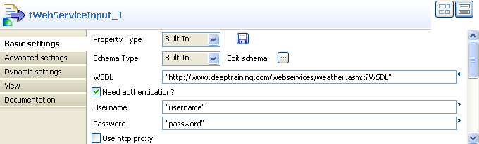

Scenario: Extracting images through a Webservice
- This scenario describes a two-component job aiming at using a Webservice method and display the output on the standard view.
- The method takes a full url as an input string and returns a string array of images from a given web page.

- Click and drop a tWebServiceInput component and a tLogRow component.
- On the Properties view of the tWebServiceInput component, define the WSDL specifications, such as End Point URI, WSDL and SOAPAction URI where required.
- If the Web service you invoked requires authentication details, check the box and provide the relevant authentication information.

- In the Method Name field, type in the method name as defined in the Web Service description. The name and the case of the method entered must match exactly the corresponding Web service method.
- Then select the return class corresponding to the expected value type.
- In the Parameters area, click the plus (+) button to add a line to the table.
- Then type in the exact parameters' name as expected by the method.
- In the Value column, type in the URL of the Website, the images are to be extracted from.
- The Class column is automatically filled in with the return class type selected earlier.
- Link the tWebServiceInput component to the standard output component, tLogRow.
- Then press F6 to run the job.

- All images extracted from the given website are returned as a list of URLs on the Run Job view.